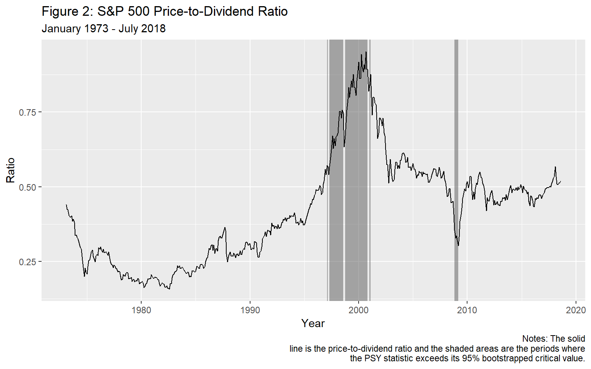

Real-Time Monitoring of Bubbles: The S&P 500
Peter C. B. Phillips
Yale Universitypeter.phillips@yale.edu
Shuping Shi
Macquarie Universityshuping.shi@mq.edu.au
Itamar Caspi
Bank of Israel and Bar-Illan Universitycaspi.itamar@gmail.com
October, 2018
Source:vignettes/illustrationSNP.Rmd
illustrationSNP.RmdAbstract
In this tutorial we illustrate the effectiveness of the PSY procedure in detecting bubbles with an applications to the S&P 500 financial market using R and the psymonitor package.
Setup
Before beginning the tutorial, make sure that you have all the necessary packages. Try running the cell below and, if any issues arise, follow the instructions within.
knitr::opts_chunk$set(eval = TRUE, echo = TRUE, warning = FALSE,
message = FALSE, comment = NA)
# CRAN Packages
# -------------
# If any of these packages are not installed, write
# install.packages("<name of package>")
# e.g., install.packages("MultipleBubbles")
library(psymonitor) # For testting for bubble monitoring
library(ggplot2) # To handle plots
library(knitr) # for nice looking tablesThe Data
The S&P 500 stock market has been a central focus of attention in global financial markets due to the size of this market and its impact on other financial markets. As an illustration of the methods discussed in this chapter, we conduct a pseudo real-time monitoring exercise for bubbles and crises in this market with the PSY strategy. The sample period runs from January 1973 to July 2018, downloaded monthly from Datastream International. The price-dividend ratio is computed as the inverse of dividend yields. The first step is to import the data to R, using the following code:
# A tibble: 6 x 3
date value pd
<date> <dbl> <dbl>
1 1973-01-31 2.27 0.441
2 1973-02-28 2.35 0.426
3 1973-03-30 2.36 0.424
4 1973-04-30 2.47 0.405
5 1973-05-31 2.5 0.4
6 1973-06-29 2.51 0.398In the presence of a speculative bubble, asset prices characteristically deviate in an explosive way from fundamentals, representing exuberance in the speculative behavior driving the market. In the present case, this deviation implies that the log price-dividend ratio is expected to follow an explosive process over the expansive phase of the bubble. But during crisis periods, the price-dividend ratio is expected to follow a random (downward) drift martingale process, in contrast to a small (local to zero) constant drift martingale process that typically applies under normal market conditions. According to the theory detailed in Section 3 and 4, we expect to witness rejection of the null hypothesis in the PSY test empirical outcomes during both bubble and crisis periods.
Figure 1 plots the price-to-dividend ratio of the S&P 500 index. We observe a dramatic increase in the data series in the late 1990s, followed by a rapid fall in the early 2000s. The market experienced another episode of slump in late 2008.

Real-Time Monitoring
With a training period of 47 observations, we start the pseudo real-time monitoring exercise from November 1976 onwards. The PSY test statistics are compared with the 95% bootstrapped critical value. The empirical size is controlled over a two-year period, i.e., by taking \(Tb = 24\). The lag order is selected by BIC with a maximum lag order of 6, applied to each subsample. The PSY statistic sequence and the corresponding bootstrap critical values can be calculated as follows in R:
First, we define the series and parameters that are used as inputs for the test procedure:
y <- snp$pd
obs <- length(y)
r0 <- 0.01 + 1.8/sqrt(obs)
swindow0 <- floor(r0*obs)
dim <- obs - swindow0 + 1
IC <- 2
adflag <- 6
yr <- 2
Tb <- 12*yr + swindow0 - 1
nboot <- 99Next, we run the test and simulate critical values via the bootstrap.
bsadf <- PSY(y, swindow0, IC, adflag)
quantilesBsadf <- cvPSYwmboot(y, swindow0, IC, adflag, Tb, nboot, nCores = 2) #Note that the number of cores is arbitrarily set to 2.The identified origination and termination dates can be calculated and viewed with the following commands:
monitorDates <- snp$date[swindow0:obs]
quantile95 <- quantilesBsadf %*% matrix(1, nrow = 1, ncol = dim)
ind95 <- (bsadf > t(quantile95[2, ])) * 1
periods <- locate(ind95, monitorDates)and printed out using the disp function
bubbleDates <- disp(periods, obs)
kable(bubbleDates, caption = "Bubble and Crisis Periods in the S&P 500")| start | end |
|---|---|
| 1986-06-30 | 1986-06-30 |
| 1987-08-31 | 1987-08-31 |
| 1996-01-31 | 1996-01-31 |
| 1996-05-31 | 1996-05-31 |
| 1996-11-29 | 1996-11-29 |
| 1997-01-31 | 1997-02-28 |
| 1997-04-30 | 1998-07-31 |
| 1998-09-30 | 2000-10-31 |
| 2000-12-29 | 2001-01-31 |
| 2008-10-31 | 2009-02-27 |
Identified periods that last more than a month are shaded in Figure 2. As is evident in the figure, the procedure detects two bubble episode and one crisis episode. The first bubble episode only lasts for two months (1986M06 and 1987M08) and occurred before the Black Monday crash on October 1987. The second bubble episode is the well-known dot-com bubble, starting from January 1996 and terminating in October 2000 (with several breaks in between). For the dot-com bubble episode the identified starting date for market exuberance occurs well before the speech of the former chairman of the Federal Reserve Bank Alan Greenspan in December 1996 where the now famous question `how do we know when irrational exuberance has unduly escalated asset values’ was posed to the audience and financial world. The identified subprime mortgage crisis starts in October 2008, which is one month after the collapse of Lehman Brothers, and terminates in February 2009.
The codes for generating the plot and shaded overlays in the figure are as follows:
ggplot() +
geom_rect(data = bubbleDates, aes(xmin = start, xmax = end,
ymin = -Inf, ymax = Inf), alpha = 0.5) +
geom_line(data = snp, aes(date, pd)) +
labs(title = "Figure 2: S&P 500 Price-to-Dividend Ratio",
subtitle = "January 1973 - July 2018",
caption = "Notes: The solid
line is the price-to-dividend ratio and the shaded areas are the periods where
the PSY statistic exceeds its 95% bootstrapped critical value.",
x = "Year", y = "Ratio") 
References
- Phillips, P. C. B., & Shi, S.(2017). Detecting financial collapse and ballooning sovereign risk. Cowles Foundation Discussion Paper No. 2110.
- Phillips, P. C. B., & Shi, S.(forthcoming). Real time monitoring of asset markets: Bubbles and crisis. In Hrishikesh D. Vinod and C.R. Rao (Eds.), Handbook of Statistics Volume 41 - Econometrics Using R.
- Phillips, P. C. B., Shi, S., & Yu, J. (2015a). Testing for multiple bubbles: Historical episodes of exuberance and collapse in the S&P 500. International Economic Review, 56(4), 1034–1078.
- Phillips, P. C. B., Shi, S., & Yu, J. (2015b). Testing for multiple bubbles: Limit Theory for Real-Time Detectors. International Economic Review, 56(4), 1079–1134.